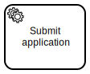
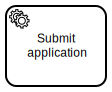

Exercise: Email sending robot
This exercise continues from the previous one by adding a new  Robot Framework  service task for delivering the generated certificate by email as an attachment.
Robot Framework  service task for delivering the generated certificate by email as an attachment.

The minimal required input or output mapping for this exercise, is to bring filename variable back to process from Create certificate task. The latter Email certificate task may use for reading the file from work item.
Extracting robot package
After the BPMN model changes, start implementing the new automation task by extracting the provided ../pdf/create-certificate.zip and then deleting the now obsolete package file.
Dependencies just work
But now that we have full also to the PDF robot code, why not to look into how it worked? Especially into Robot dependency file, conda.yaml, which tells that PDF creations is based on combined powers of xhtml2pdf PDF-converter and Chamelon HTML templating.
channels:
- conda-forge
dependencies:
- python=3.9.13 # https://pyreadiness.org/3.9/
- pip=22.1.2 # https://pip.pypa.io/en/stable/news/
- pip:
- rpaframework==19.4.1 # https://rpaframework.org/releasenotes.html
- chameleon
- xhtml2pdf
Compatible runtime environment with these dependencies in place is implicitly managed by Robocorp Code for development and RCC for the orchestrated execution.
Sending the message
The playground has a local SMTP mock server listening at localhost:1025. Let’s follow the examples of RPA framework’s Email.ImapSmtp keyword libray to send the attachment as email.
*** Settings ***
Library RPA.Email.ImapSmtp smtp_server=%{SMTP_HOST=localhost} smtp_port=%{SMTP_PORT=1025}
Library RPA.Robocorp.WorkItems
Library String
*** Variables ***
${name}
${email}
${filename}
${template} SEPARATOR=\n
... Dear {name},
...
... thank you for participating the workshop.
...
... Please, check the attachments for your certificate.
...
... Yours sincerely,
... The Organizers
*** Tasks ***
Mail certificate PDF
Set Task Variables From Work Item
${name}= Strip String ${name}
${email}= Strip String ${email}
${certificate}= Get Work Item File ${filename}
${body}= Format String ${template} name=${name}
Send Message sender=noreply@example.com
... recipients="${name}" <${email}>
... subject=Certificate of Participation
... body=${body}
... attachments=${certificate}
Because RCC can run tasks from any .robot from the package root, we can have the above task in its own file next, e.g. mail.robot.
Multiple tasks per package
There is no limits for the amount of task allowed in tasks each RCC compatible Robot Framework automation package (or just “robot”). The only limit is, how many tasks are still practical to be listed in a single robots.yaml.
Here’s robot.yaml from ../pdf/create-certificate.zip package updated with the new task mapping:
# For more details on the format and content:
# https://github.com/robocorp/rcc/blob/master/docs/recipes.md#what-is-in-robotyaml
tasks:
# Task names here are used when executing the bots, so renaming these is recommended.
Create certificate:
robotTaskName: Create certificate PDF
Email certificate:
robotTaskName: Mail certificate PDF
condaConfigFile: conda.yaml
environmentConfigs:
- environment_windows_amd64_freeze.yaml
- environment_linux_amd64_freeze.yaml
- environment_darwin_amd64_freeze.yaml
- conda.yaml
artifactsDir: output
PATH:
- .
PYTHONPATH:
- .
ignoreFiles:
- .gitignore
You’ve got mail
Once you have deployed the new process model, wrapped the updated package, launched RCC integration and started executing a new version, you should be able to view the sent email at Mailhog web user interface.
{kind=link}
Resource summary
{kind=link}
create-certificate.bpmn
../pdf/create-certificate.form../pdf/create-certificate.json
create-certificate.zip